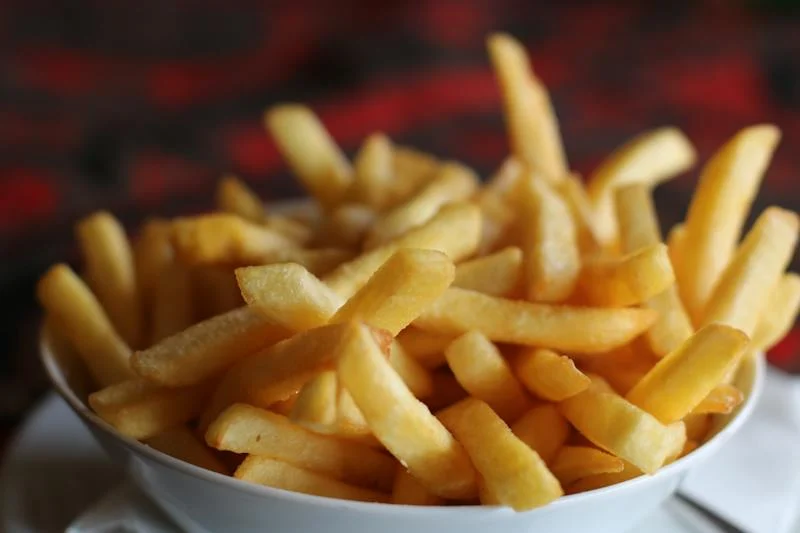

Fries

Description
Crispy fries that you can have at breakfast, lunch, or dinner. You can make them cubed, sliced, or wedged.
ingredients
- Potatoes
- Butter
- Seasonings of your Choice
How to make
- Rinse and drain your cut up potatoes.
- Season your potatoes.
- Put in your air-fryer for 15 minutes (or until crispy) on 390 degrees Farenheight.